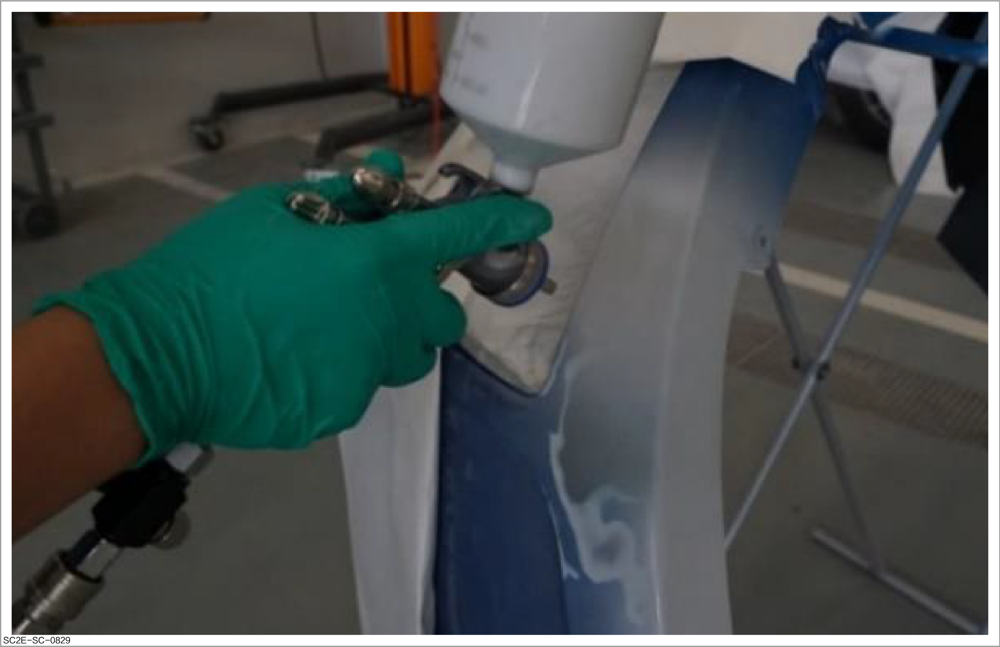
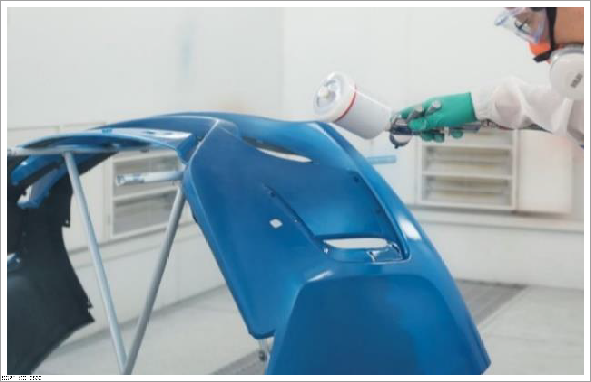
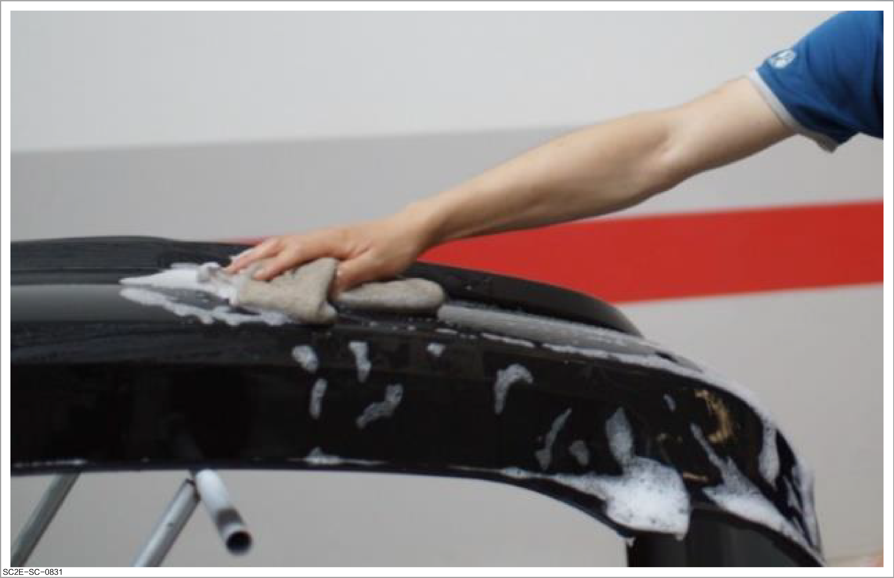
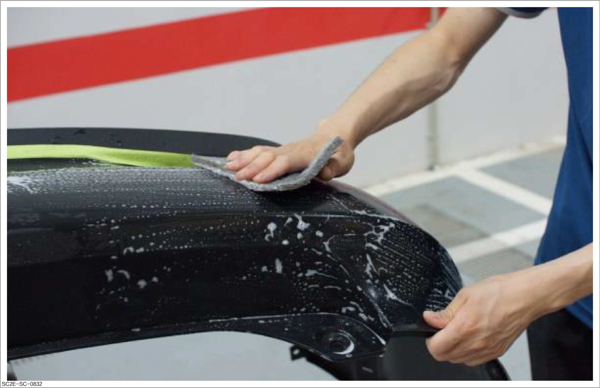
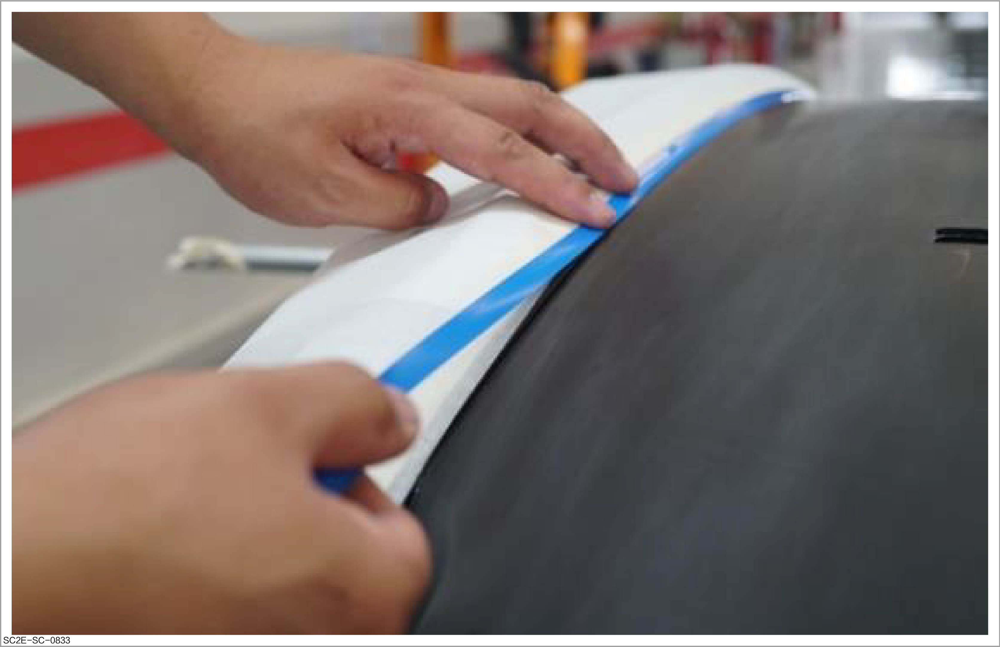
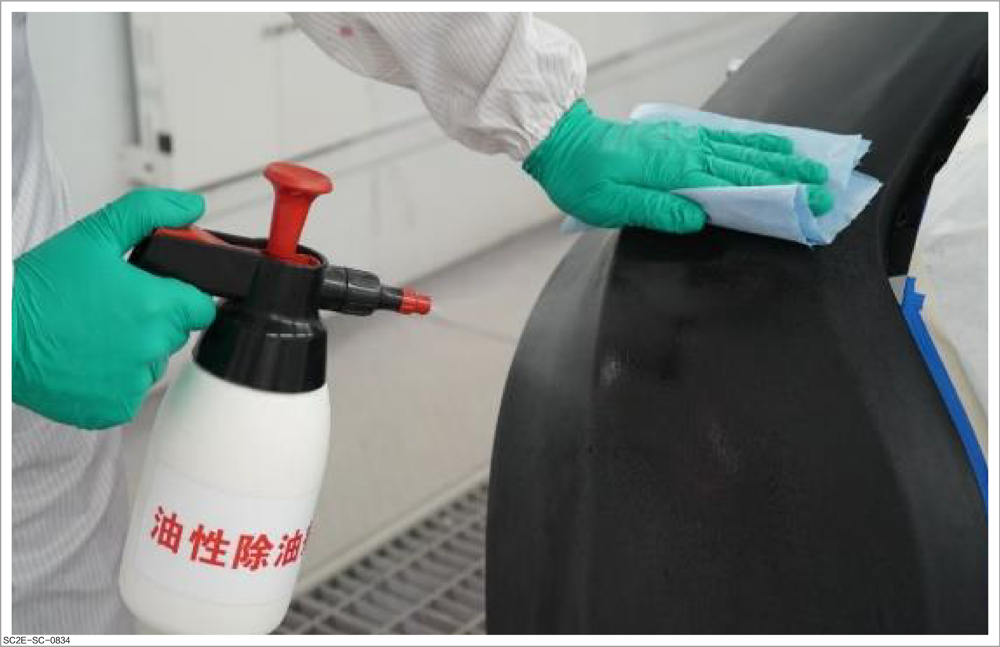
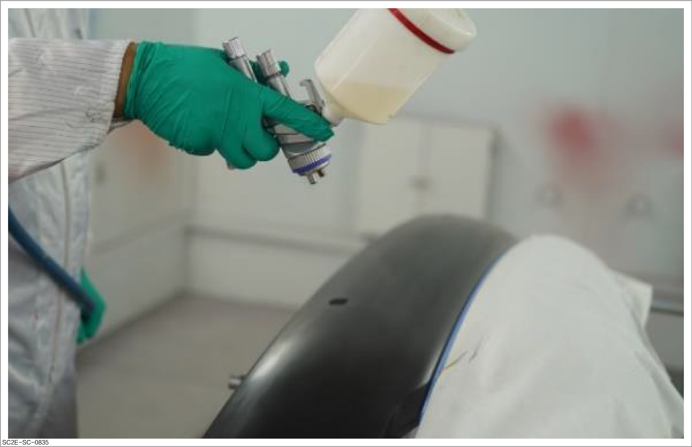
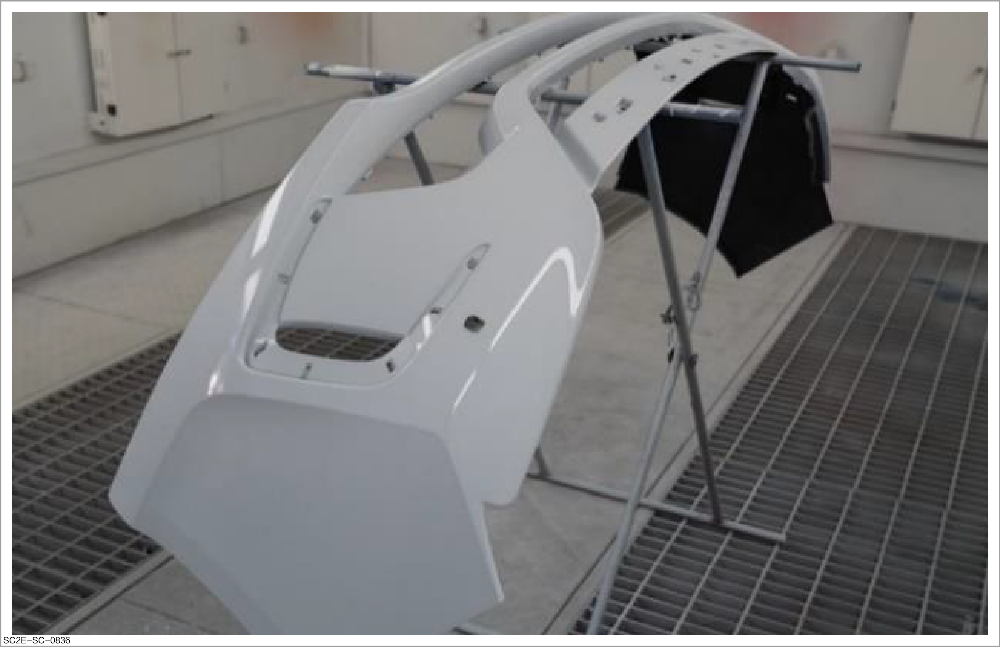
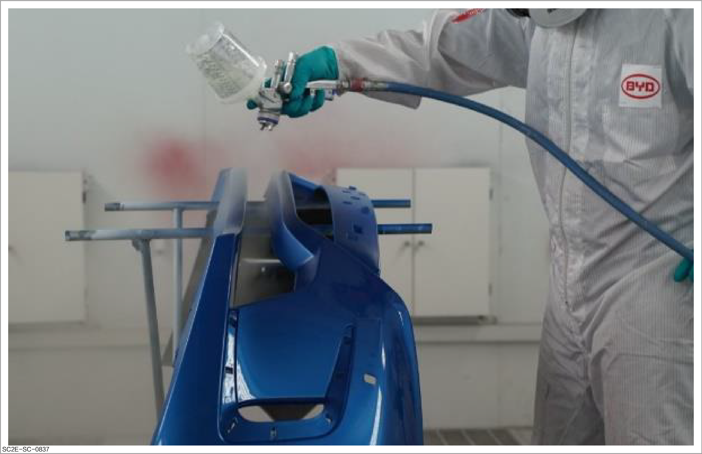

Spraying of plastic parts

-
During operation, please take safety protection measures as required. For details of safety protection, please refer to Spraying protection
-
Before operation, please carefully read and observe site safety and vehicle protection. Please refer to Site safety and vehicle protection
-
In order to ensure the spraying quality, please read FAQs and their solutions carefully before operation.

This document introduces how to spray plastic parts with the spraying of damaged area and new bumper as an example.
Spraying of damaged bumper
-
Repair the damaged area. Refer to How to repair plastic parts
-
Apply the plastic poly-putty. Refer to Application of plastic poly-putty
-
Spray the intermediate paint. Refer to Spraying of intermediate paint

-
Spray the top coat: To ensure spraying quality, please read FAQs and their solutions carefully before operation.
CautionDuring paint application of plastic parts, soft additive shall be used according to the softness of plastic parts and product description of the paint manufacturer. Otherwise, it may cause cracks and poor adhesion in future.

-
Dry the top coat. Refer to How to dry
-
Repair the defects. Refer to Performing polishing
Spraying of new bumper
-
Removal of release agent: Clean the bumper surface with hot soapy water to remove the release agent.
ReminderIn the production of bumpers, in order to facilitate mold release, the mold release agent will remain on the bumper surface. Failure to remove it will cause defects such as poor adhesion of paint coating.

-
Grinding of bumper surface: For enhanced adhesion, grind the entire bumper surface with gray scouring pad and abrasive paste before spraying.
CautionRepair the damaged area on the surface of new bumper.

-
Masking protection: The bumper area not to be painted should be pasted with masking tape and masking paper, and the edge should be protected with special gap tape to avoid paint leakage at the edge of the tape.
CautionThe masking tape shall be removed after spraying and before coating drying.

-
Cleaning and degreasing: After cleaning and degreasing the bumper surface with degreasing cleaner, remove static electricity from the panel surface with electrostatic cleaning agent.
CautionSince the plastic bumper is prone to generating static electricity, leading to defects in dust collection during spraying, it is necessary to remove static electricity with electrostatic cleaning agent.

-
Thin plastic primer: Upon thin application, make sure that there is no exposed plastic on the surface of plastic parts.
Caution-
If the plastic primer has not been applied, the paint will not adhere, resulting in coating peeling.
-
Do not apply the plastic primer thickly as this will cause the paint to peel or shrink around the feather edge.

-
-
Apply the intermediate paint. Refer to Spraying of intermediate paint
Caution-
This step can be skipped if the newly replaced bumper has no surface defects and is applied with intermediate paint.
-
Add soft additive when applying intermediate paint, so as to avoid surface cracks of the plastic parts under stress.
-
In case of defects, dust spots and sagging after application of intermediate paint, grinding is required after drying.

-
-
Spray the top coat: To ensure spraying quality, please read FAQs and their solutions carefully before operation.
CautionDuring paint application of plastic parts, soft additive shall be used according to the softness of plastic parts and product description of the paint manufacturer. Otherwise, it may cause cracks and poor adhesion in future.
